廓形
用清晰比例回应真实身体，让线条自然发生。
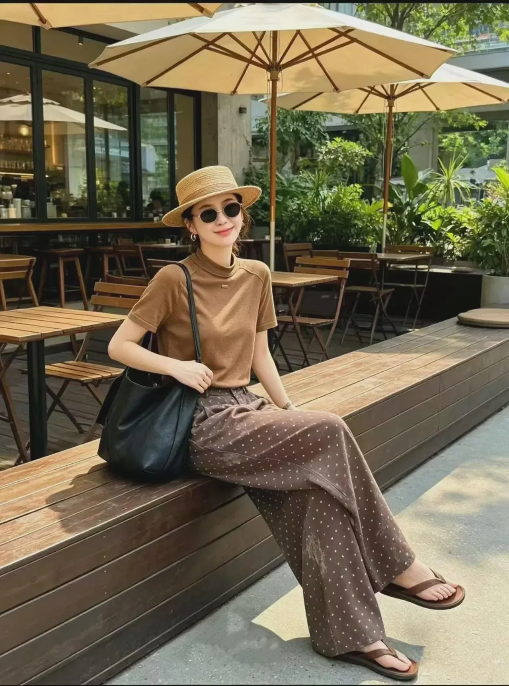
About VV&Princess
VV&Princess源于创始人对女性服装持续二十余年的热爱与探索。
从女装行业到原创设计，长期积累让品牌逐渐形成对女性着装需求的理解。对于VV&Princess而言，一件好的衣服，不仅需要呈现设计，也需要理解穿着它的人。
2019年，VV&Princess于杭州正式创立。依托杭州成熟而活跃的时尚产业环境，品牌进一步确立以原创设计为核心的发展方向，将多年积累转化为具有辨识度的品牌语言。
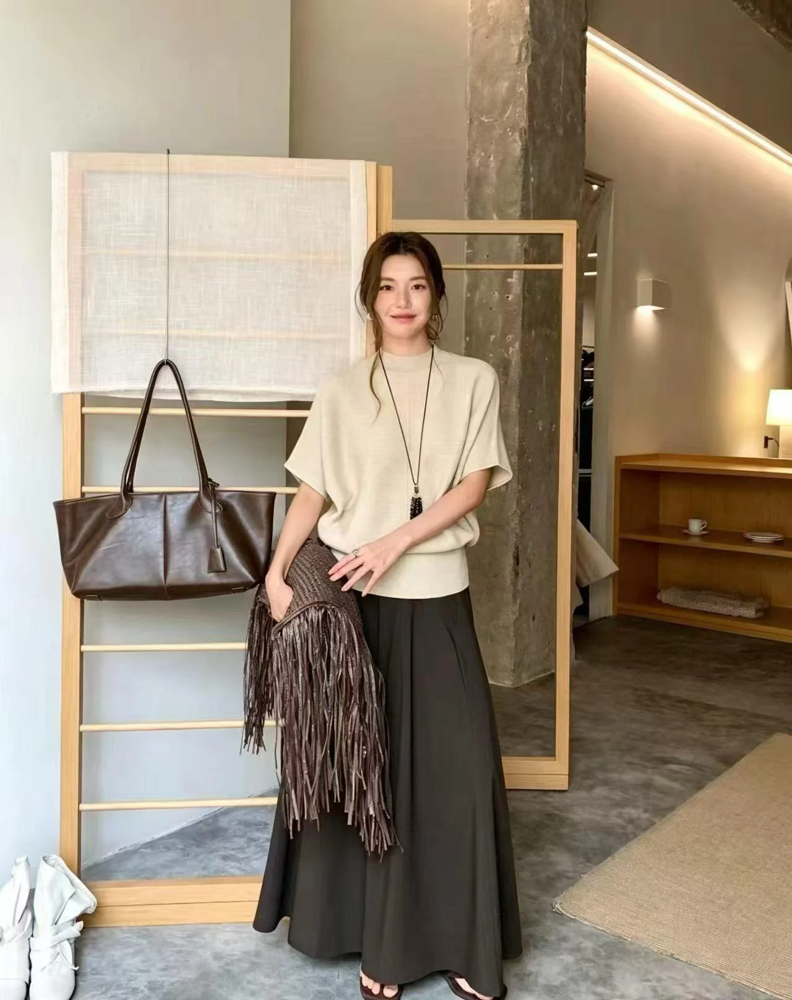
Design philosophy
原创并不意味着刻意追求复杂。真正成熟的设计，可以在克制的表达中拥有自己的态度，也可以在精致的外表之下保留舒适与温度。
“服装最终需要回到穿着它的人。”
用清晰比例回应真实身体，让线条自然发生。
以触感、垂坠与舒适，承载衣服的日常温度。
减少不必要的装饰，在克制中留下辨识度。
VV&Princess collection
陪伴女性穿梭于工作、生活、社交与重要场合，在不同身份与人生阶段中，依然保持自己的审美与从容。
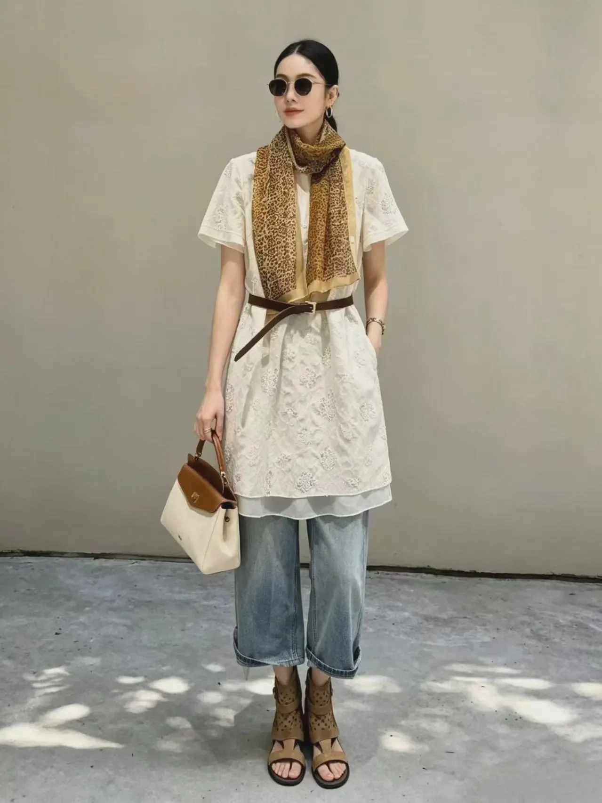
简洁剪裁与利落廓形，兼具专业感与女性气质。
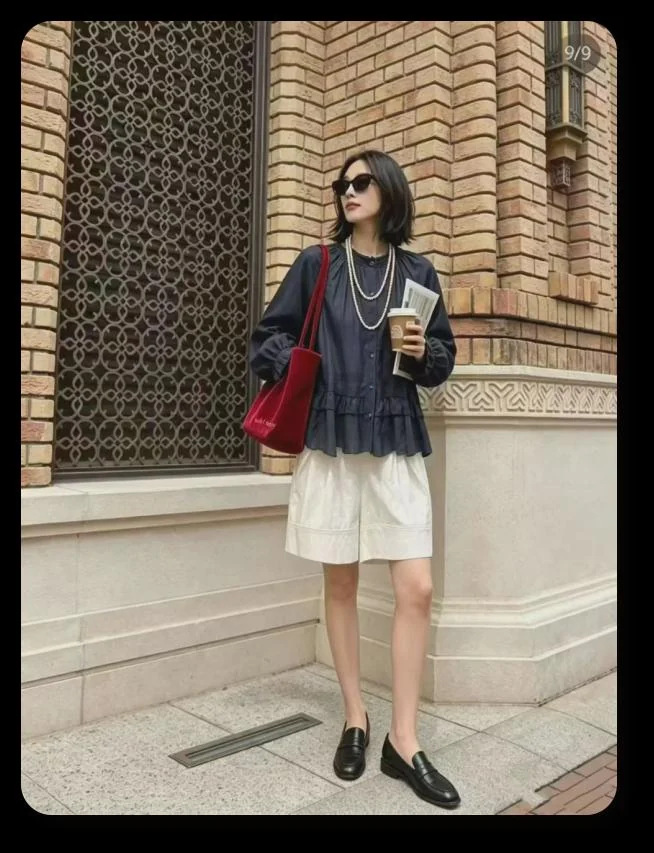
通过廓形、材质与细节，呈现克制而鲜明的女性气质。
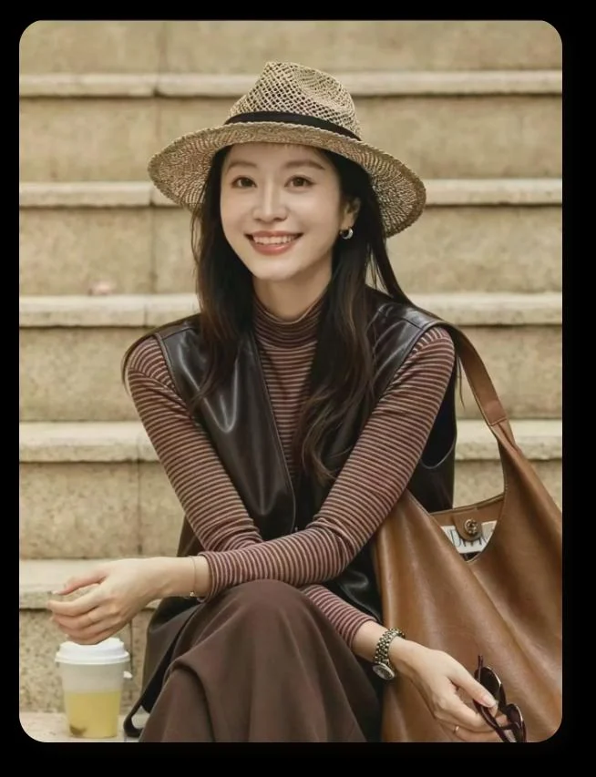
舒适材质与现代设计结合，让原创自然进入日常生活。
Seasonal edit
从克制廓形、细腻材质到松弛叠穿，以多元造型回应当代女性在城市中的每一种日常。
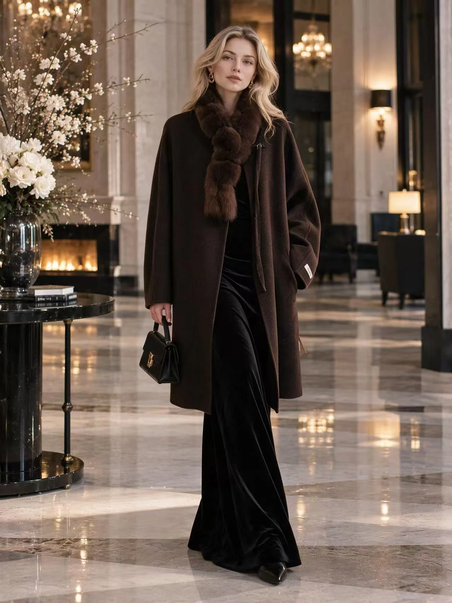
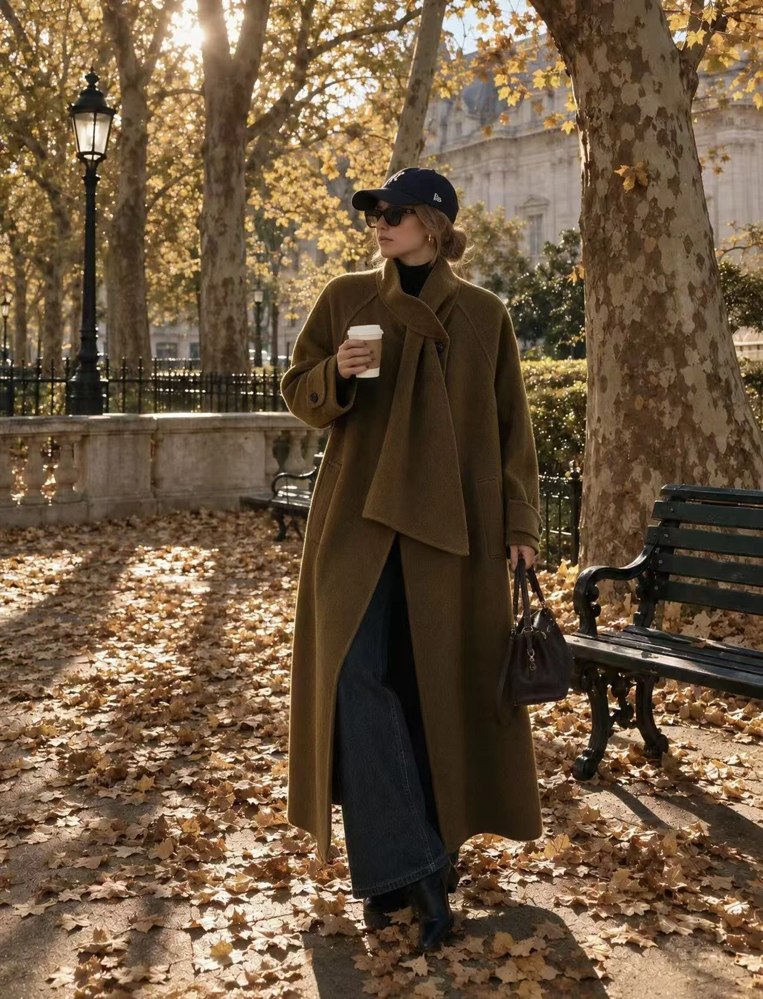
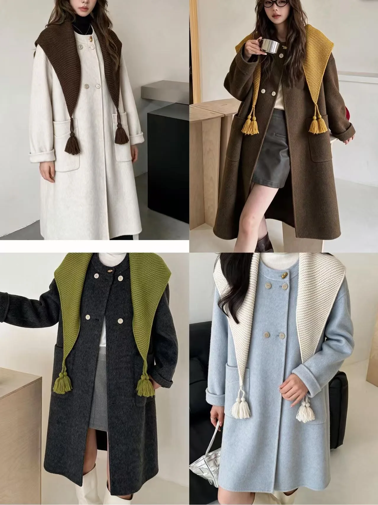
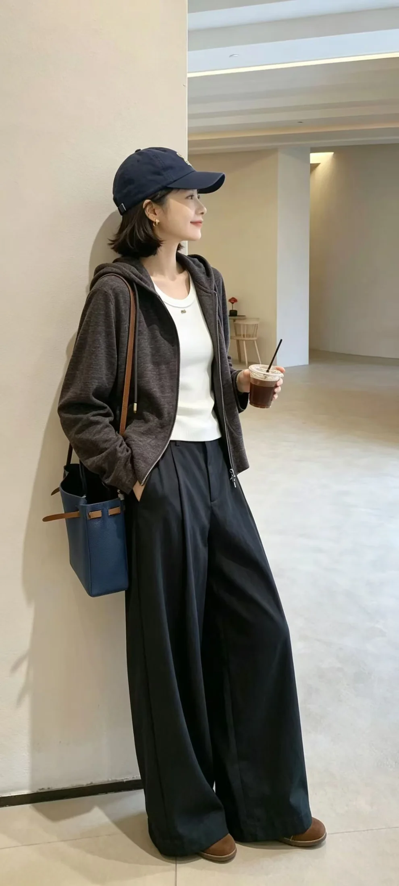
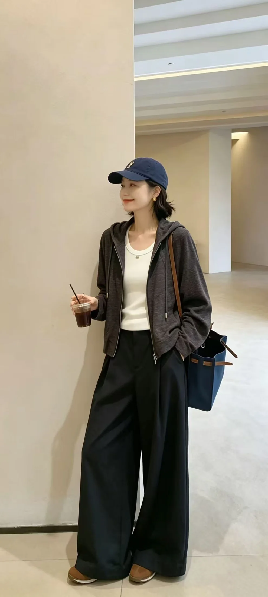
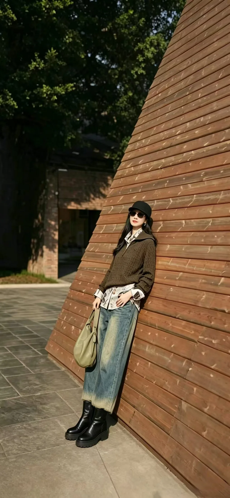
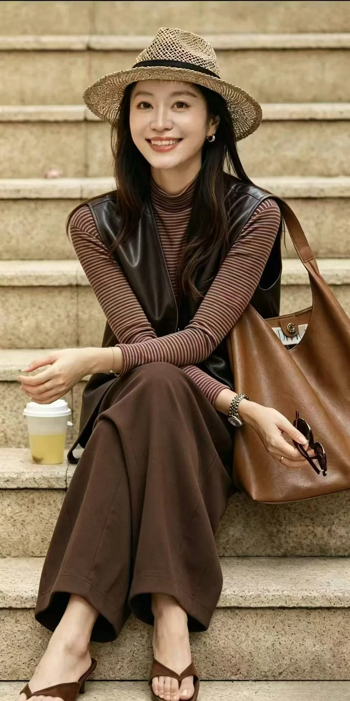
The VV&Princess woman
她们成熟、自信，拥有自己的选择。她们重视品质、剪裁、设计感与舒适度，希望衣服能够表达个人气质，也能自然进入工作、生活与社交场景。
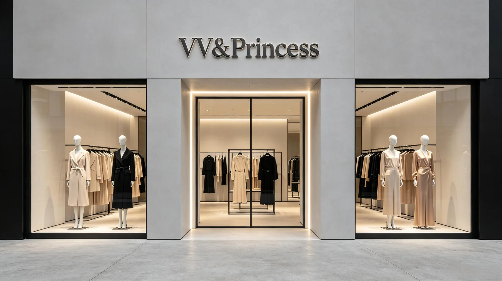
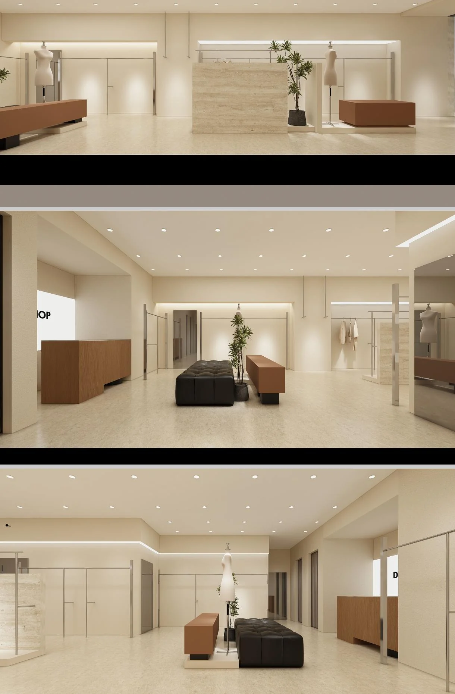
Contact us
如需了解品牌、系列与到店信息，欢迎与我们联系。